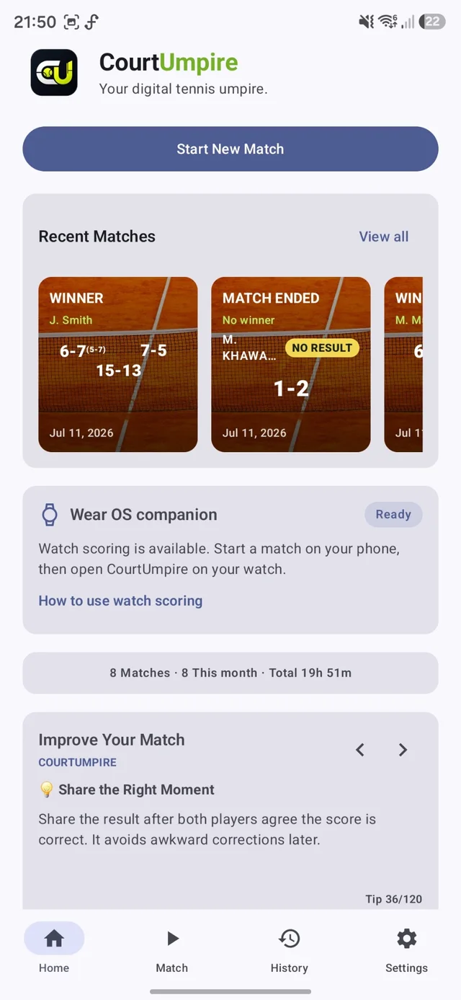
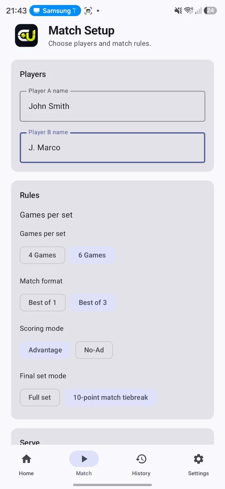
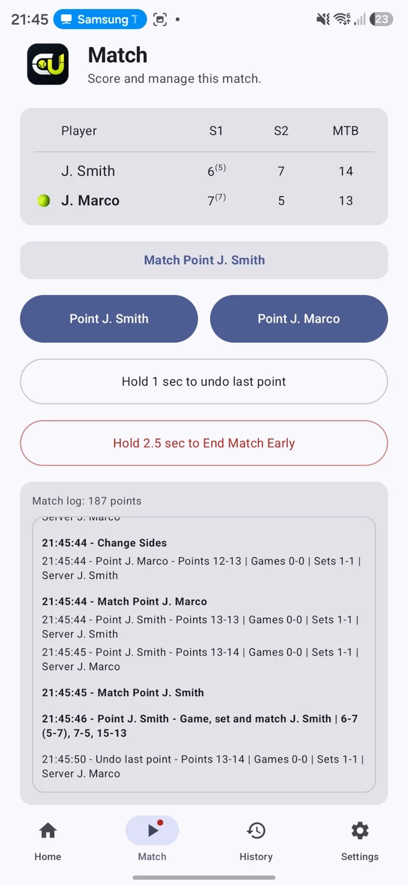
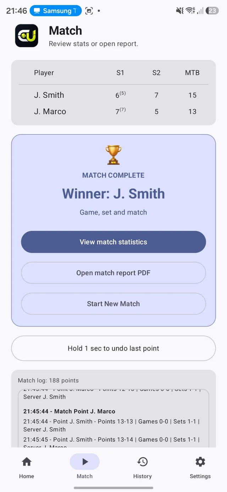
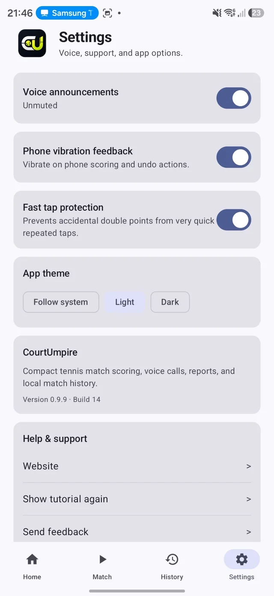
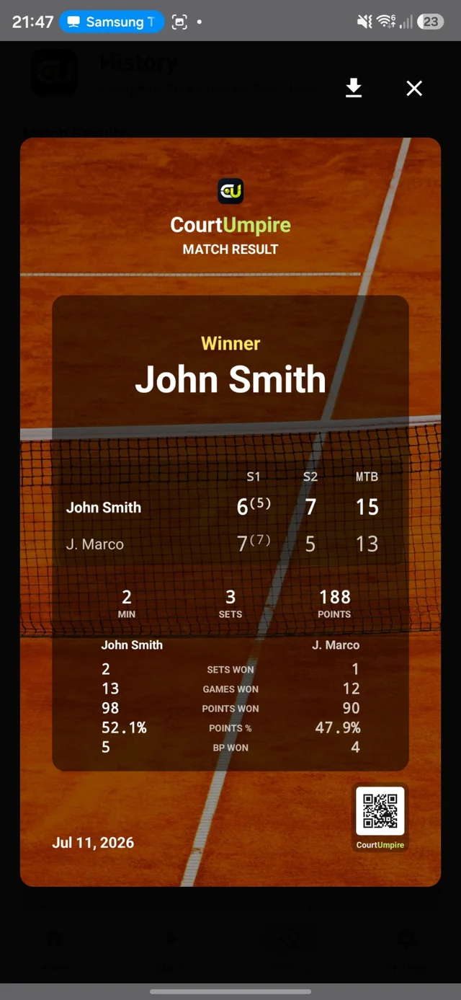
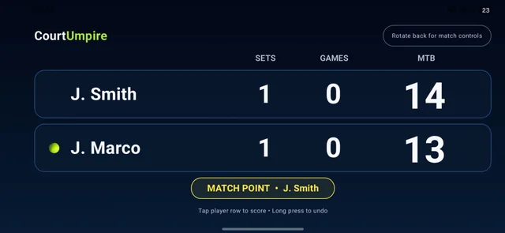
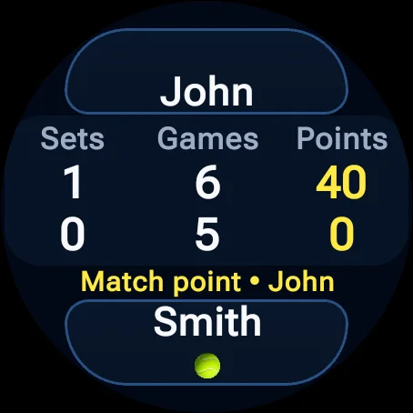

Flexible Match Rules
Choose 4-game or 6-game sets, best-of-1 or best-of-3, Advantage or No-Ad, and a full final set or 10-point match tiebreak.
For the time you spend on court
Build a practice that fits your group, find an illustrated drill, and keep match scoring simple with CourtUmpire for Android and Wear OS.
Practice · for one court and your kind of group
Choose your group size for suitable games, useful rotations and complete illustrated instructions.
Built for the court
The CourtUmpire Android app handles scoring for amateur players, friendly matches, club matches, training sets and small tournaments.
Choose 4-game or 6-game sets, best-of-1 or best-of-3, Advantage or No-Ad, and a full final set or 10-point match tiebreak.
Track points, games, sets, server order and side changes, with undo and fast-tap protection for accidental repeated taps.
Hear score calls and receive change-ends, break-point, set-point and match-point announcements.
Review match statistics and history, create detailed PDF reports and share or download polished result images.
Score directly on Android, use the large landscape scoreboard or control the active match from a connected Wear OS watch.
The Android app needs no account and has no advertising. Match records remain stored locally on your device.

In the Android app: no account required, no ads, and match data stays on your device.
The real app
Actual CourtUmpire screens from Android and Wear OS.








A few useful answers
Set up your match rules and award points on your Android phone. CourtUmpire tracks points, games, sets, server order and side changes, with voice score calls and a live match log.
Yes. A connected Wear OS watch lets you award points and follow the server, games, sets and match information for the active match on your Android phone.
Use undo to correct an accidental point. Fast-tap protection also helps prevent repeated taps from adding points by mistake.
Yes. CourtUmpire generates detailed PDF reports on your device. You choose whether to save, export or share a report using your selected app or service.
No account is required in the app. Match records stay locally on your device, and the app has no ads. Optional website analytics is controlled separately through Analytics settings.
Available now
CourtUmpire is available for Android, with a connected Wear OS companion for scoring from your wrist.
Before you head out